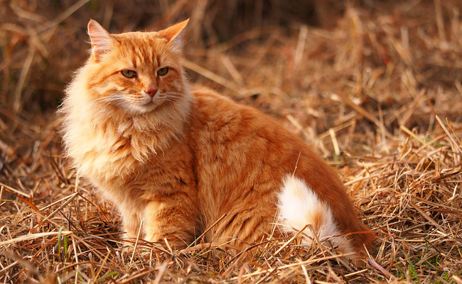

-
Les Chats Roux
04/10/2023
Chez le chat, la couleur rousse, ou Red, se réfère à une robe de chat possédant des poils de couleur rousse. Il est codé par le gène O qui se situe sur le chromosome sexuel X.
Les chats Noires

04/10/2023
La robe noire du chat est due aux poils noirs et à la peau également pigmentée.
L'apparition des poils noirs est codée par le gène B dont on reconnaît trois allèles.
La couleur noire est souvent réduite au chat unicolore noir, cependant, elle peut se marier avec tous les patrons de robe de chat.